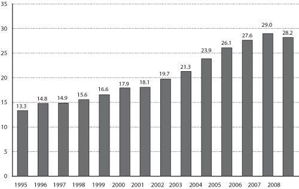

Excel | CSV | Table Version
(Millions of loaded TEUs)
KEY: TEUs = twenty-foot equivalent units. One 20-foot container equals one TEU, and one 40-foot container equals two TEUs.
NOTES: Totals are for all container ports in all 50 states and Puerto Rico. The data in this figure include only loaded containers in U.S. international maritime activity and cover U.S. imports, exports, and transshipments.
SOURCES: 1995-2004: U.S. Department of Transportation, Research and Innovative Technology Administration, Bureau of Transportation Statistics, based on data from U.S. Department of Transportation, Maritime Administration, which are drawn from The Journal of Commerce, Port Import Export Reporting Service (PIERS). 2005-2007: Data from the U.S. Department of Transportation, Maritime Administration, 2008: Estimate based on PIERS Trade Horizon estimate of annual percentage growth from 2007, reported at www.joc.com, as of March 19, 2009.